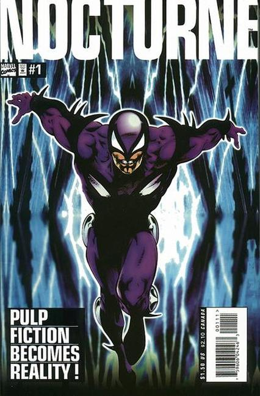

Series: 4 issue mini series 1995
Publisher: Marvel
Written by Dan Abnett
Illustrations by Joe Fonteriz
Gray Poldark discovers that the 30s pulp hero Night Raven actually has a hideout with a costume in it. He dons the suit and becomes the crimefighter known as Nocturne.